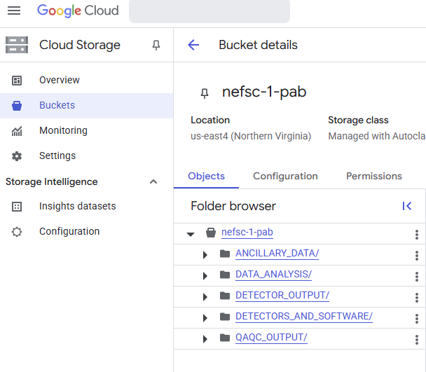
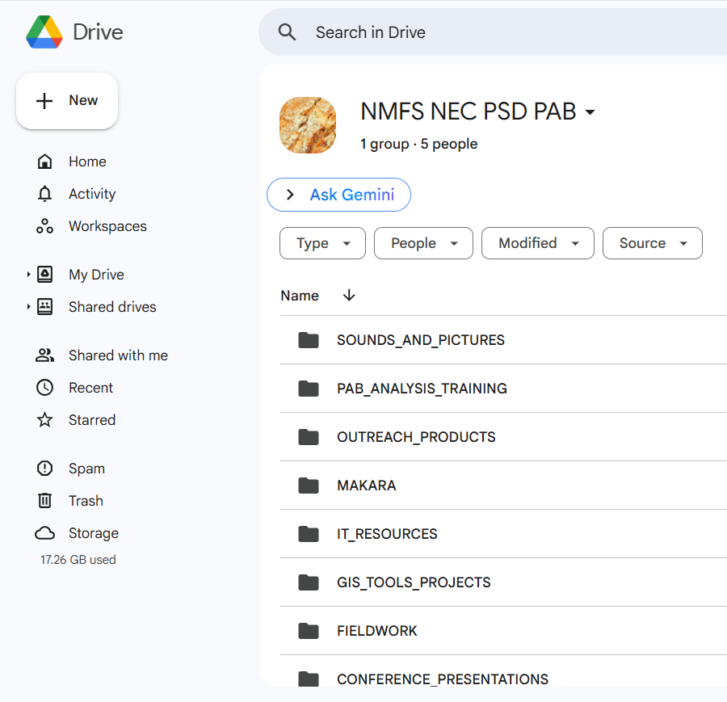
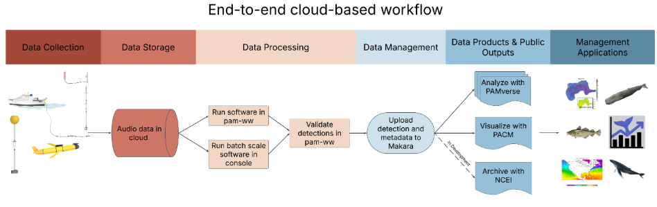
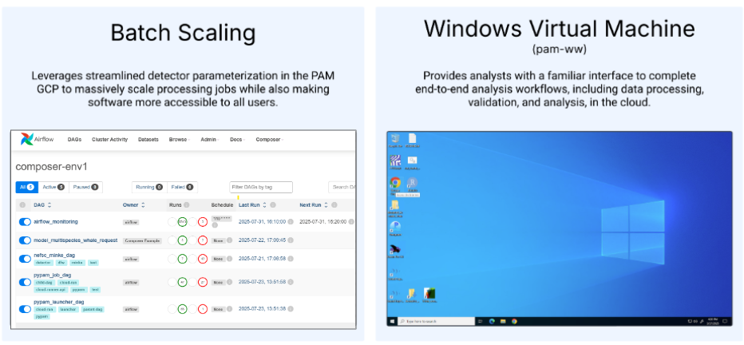
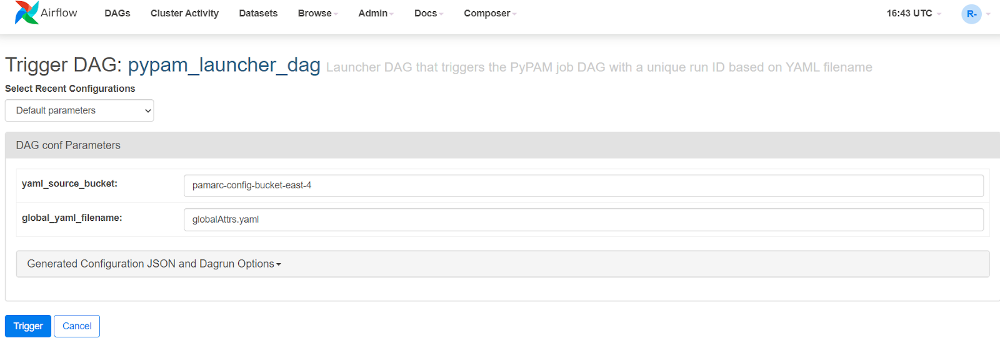
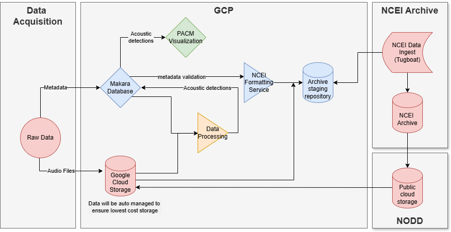

PAB Cloud Data Management
Following on the developments of the PAM SI, PAB has migrated to the National PAM Google Cloud Platform for data storage and processing which is maintained by the Fisheries OCIO at headquarters. The cloud project is named: ggn-nmfs-pamdata-prod-1. This cloud area is shared by all NOAA Fisheries PAM programs and is separate from the NEFSC-led cloud migration. This page is intended to provide an overview of how PAB daily operations and analyses translate to cloud workflows.
If you are having IT issues in the cloud, review the cloud manual for troubleshooting advice, then reach out within PAB for support (ie. your analysis lead or the cloud migration team - Becca/Gen/Julianne/Kate/Lindsey), if your issue is still not resolved then submit a smartsheets ticket for support. Do not submit an NEFSC IT ticket for support in the PAM Cloud.
Accessing Data in the Cloud
Cloud data can be accessed online through the PAM Google Cloud Data Buckets, or through personal cloud windows workstations (pam-ww). Resources for accessing, managing, and analyzing cloud data are available on the cloud github manual. All audio files, detector output, and any other files necessary for data processing will be stored in the google cloud buckets.
Other documents that are part of PAB organizational management (e.g. conference presentations, cruise deployment metadata, etc.) will be stored in a new shared PAB google drive. This shared google drive can be accessed by opening Google Drive, clicking the “Shared drives” link on the left panel, then opening the “NMFS NEC PSD PAB” drive.
Data storage in the cloud mirrors how data is stored on the server.
- PassiveAcoustic_Soundfiles → nefsc-1
- PassiveAcoustics → nefsc-1-pab OR PassiveAcoustics → PAB google drive


Each of our cloud buckets have specified user permissions to prevent accidental data loss. Everyone with access to the PAM Google Cloud is able to read data from all data buckets, regardless of science center affiliation. For the NEFSC PAB specific buckets, everyone on the nmfs.nec.pa.branch email listserv is able to read, write, move, delete, etc. in all folders within nefsc-1-pab. Only select data admins have been given the ability to write, move, or delete files in the nefsc-1 data bucket. Any changes to these permissions should be recorded in this spreadsheet and will then be updated by the PAM Cloud developer, Dan Woodrich.
The cloud buckets currently have a 7-day “soft-delete” policy. This means that any accidentally deleted files can be recovered by the cloud developer or data admins for up to seven days. If you accidentally delete data from the cloud, reach out to Julianne and Kate for recovery support. If they are unavailable submit a smartsheets ticket or email Dan Woodrich (daniel.woodrich@noaa.gov) for support.
End-to-end cloud workflow
The first test run of the end-to-end cloud data management for PAB will start after the October SNE fieldwork.

Data offload & QAQC
The general process for SoundTrap data will be:
- SD cards are offloaded to an external hard drive;
- Compressed .sud files are uploaded to the cloud from the external hard drive through Odyssey using gsutil/cloud sdk tools;
- Files will be decompressed by the QAQC using SoundTrap Host on personal windows workstations (pam-ww);
- QAQC scripts will be run and output analyzed in R on the pam-ww;
- QAQC status will be updated on Smartsheets and audio files will be available for processing as usual.
Because every movement of data in the cloud incurs a cost, audio files will be stored in their appropriate nefsc-1 organization structure before QAQC is complete. Always reference the All analyses smartsheet to confirm that a given deployment has cleared QAQC and is ready for analysis. Deployments that are already uploaded to the cloud are listed on the GCP Status smartsheet.
The upload process will be similar, but adjusted as needed for data collected from other platform types. For example, real-time data is provided by WHOI through the NEFSC Google Cloud and is automatically copied to our PAM Cloud storage using a script managed by NEFSC ITD. During the cloud migration and while we have access to the NEFSC servers, compressed audio files can also be backed-up on the server.
Cloud processing
Once data is available in the cloud and has cleared QAQC, cloud processing can begin. An overview of cloud processing with detailed instructions and troubleshooting recommendations are available on the cloud manual. We have two general frameworks for data processing in the cloud: Batch scaling and user interaction on windows workstations.

Batch-scaled software:
Submitting processing jobs for batch-scaled software is available or in development for: PyPAM Soundscape metrics, LFDCS, the minke detector, and the humpback CNN. Batch-scale processing jobs or runs are submitted online through Google Cloud Composer (aka Airflow) interface. These are currently still in the development cloud environment, but will soon be transitioned into our PAM Cloud project.
Each software has its own “DAG”, which is a link to a user interface where the analyst provides the required configuration inputs for the software. These inputs vary for each software and will be specified in analysis specific protocols. An example DAG for submitting a PyPAM job is shown below.

An advantage of cloud processing is that we are no longer limited to submitting one processing job at time. All analysts can submit as many DAGs as needed for their work and all jobs will be run at the same time. One exception is LFDCS, in which submitted DAGs will enter a processing queue and will be processed as licenses become available. This set-up allows the flexibility for data to be parallel processed and for multiple analysts to run the same software simultaneously.
Cloud Windows Workstations:
Personal windows workstations (also referred to as the pam-ww or Windows VM) provide analysts with a familiar interface to interact with data, run Windows-dependent software, or manually validate data in the cloud. PAB software or analysis tasks that will be conducted on the workstations include: PAMGuard processing, Matlab & Triton processing (e.g. Cod, vessel detection), python detectors that haven’t been containerized (e.g. Haddock and pile driving), manual review or validation tasks for all softwares in Raven, Soundscope, Ecosound, or LFDCS, and data analysis/summary in R or other program of choice.
All resources relevant to the cloud windows workstations are provided on the cloud github manual. Please read this page in full so you are aware of the resources available. A few key highlights are:
- You will not be able to save any files in nefsc-1-pab directories, unless the bucket is mounted to a letter drive. Follow this instructions for configuring user mounts so that the bucket is mounted to the Z: drive as Z:nefsc-1-pab
- The workstations reboot on the 15th of every month at 22:00 UTC, any processing jobs will be interrupted
- Workstations should be turned off when not in use or processing jobs aren’t running.
- Follow these steps for troubleshooting on the workstations: (1) Review the github manual to see if your issue has been addressed; (2) check your workstation version and request an upgrade if yours is out of date; (3) Ask the PAB cloud leads (Becca, Gen, Lindsey, Julianne) or other colleagues for support; (4) Submit this form to report an issue or request a new feature/software on the pam-ww. Our cloud development team, including Dan Woodrich, will get an automated email with your request and will start working on it soon. The status of your bug/feature request will be available here.
To streamline cloud protocols and ensure consistency across PAB, we have decided to assign specific letter drives to our two cloud buckets. Follow the configuring user mounts instructions, to mount:
- nefsc-1 to the Y: drive
- nefsc-1-pab to the Z: drive
Temporary files that you need to access on your workstations can be saved in a personal folder (named firstname_lastname) in the pam-ww-tmp bucket. This bucket is mounted to the X: drive by default. This X:/pam-ww-tmp/firstname_lastname folder is available through the google console and files stored there will be saved, even if you upgrade your workstation. Other temporary files or files that need to be available both on the cloud and locally can either be saved to google drive or emailed to yourself from the workstation.
Notes about upgrading your workstation
- Before upgrading your windows workstation, back up any files that you have saved in the Document, Desktop, or Downloads folders on your workstation. All files saved there will be lost during the upgrade. Consider saving files in your X:/pam-ww-tmp folder instead.
- Once you have the upgraded workstation, you will need to go through all access steps as if it is the first time you are accessing the workstation, including configuring your user mounts and installing any software that is not built into the workstation (ie. MATLAB and Anaconda)
If your pam-ww computing power is limiting
We have the ability to increase the CPU and RAM for individual workstations. This incurs additional cost, so can only be done in cases when workflows are heavily restricted. If you are hitting a CPU limitation on your workstation, increasing the computing resources available may be a good option if:
- You are waiting on processing tasks to complete without other tasks to complete in the meantime (ie. validation, data analysis, writing, etc), or
- You have a hard deadline for a processing task and cannot meet it with current processing capacity; or
- You have multiple processing steps that could be completed simultaneously if more computing resources were available, and your overall workflow is limited by waiting for one of the steps to be completed
To inquire about increasing the computing capacity of your workstation, submit a smartsheets ticket for support from Dan.
Managing the transition
As of August 2025
Earlier in the cloud migration we created an nefsc-1-detector-output bucket. Since receiving the directive to migrate fully to cloud, we have decided to move away from this bucket naming so that cloud operations better mirror our local servers (ie. creating the nefsc-1-pab bucket). All detector output currently stored in the old nefsc-1-detector-output bucket will need to be moved to the new location in nefsc-1-pab/DETECTOR_OUTPUT and user mounts will need to be updated. We will announce a day that the transition will be happening, ask everyone to stop processing on the workstations, and then make the switch collectively.
Once LFDCS is available for cloud processing, we will fully migrate to cloud operations. Currently, processing workflows are split between the cloud and local systems. Sometime between now and October 1st, all files saved on the server in PassiveAcoustics/DETECTOR_OUTPUT will be uploaded to the cloud and we will stop saving output to the server. Consider using the notes column on the All Analyses board to indicate detector output that is stored on the cloud during this transition. In the meantime, how to manage the split workload is being managed on a case-by-case basis. For example, vessel detection output has been downloaded from the cloud to the server to finish analysis locally. More details about this migration will be communicated soon.
In August multiple remote desktops are being decommissioned (Khaleesi, Bruce, and Glacialis) and in October we will lose access to the Macs. All processing conducted on those computers should be migrated to the cloud or one of the remaining remote desktops. Reach out to Gen/Becca or your data processing lead for support during the transition.
The vast majority of audio data collected from 2015 - present is already available on the cloud. The remaining PAB legacy data will be uploaded to the cloud throughout the Fall. If you need a certain deployment or detector output available in the cloud sooner, reach out to Julianne for upload support.
There are a few areas of cloud migration and data management that we are still sorting out for PAB. Some streamlining of data stored in the cloud is likely coming. For example, to save on storage costs we will no longer save the pre- and post- deployment audio files. We may also ask to reduce the amount of detector output files that are saved once validation is completed. Consider whether there are file types, or raw output for your priority processing that you would be comfortable deleting once output is validated.
PAB Cloud Leads & Leave Planning
- Overall Cloud Development & Migration: Becca and Sofie
- Data storage & upload: Julianne & Kate
- Windows Workstations (pam-ww): Lindsey & Gen
- Batch-scale processing: Gen
- NCEI Archiving process: Gen
Please list current challenges or any questions here:
- PAMGuard processing needs? Additional cores?
- Any detector_output needed in the cloud asap?
Things to figure out/plan:
- Best practices for the PAB google drive
- Who to upload ancillary data (ie. vemcos)
- Add the steps to update the ITD script for copying collaborator data
- Adding the most up to date version of PAMGuard annually as a pre-baked version.
The bigger picture
The PAM SI has been developing an end-to-end cloud pipeline for data management, processing, and archiving. This pipeline significantly leverages the Makara database for metadata management. Future developments will include streamlined archiving and the possibility to automate the submission of multiple processing jobs for data in the cloud. More details will be shared as development is completed.
